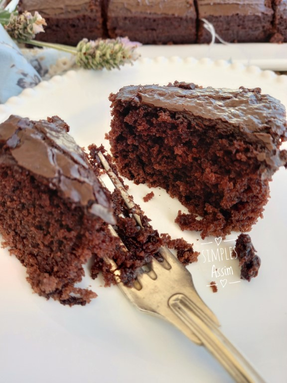

Receita de Bolo de Coca

Descrição
Esse bolo de coca-cola não é nada comum, mas acredite, fica simplesmente delicioso.
Veja como é simples o seu preparo.
Ingredientes
- 4 ovos
- 1 e 1/2 xícaras de açúcar
- 1 colher de margarina
- 1 xícara de coca-cola
- 1 e 1/2 colher (café) de fermento
- farinha de trigo
Modo de preparo
- Coloque no liquificador os ovos e a coca-cola, bata os dois e logo em seguida acrescente o açúcar, a margarina, a farinha de trigo e por fim o fermento.
- Bata tudo até obter uma massa homogênea e em seguida transfira a massa para uma assadeira.
- Leve ao forno preaquecido em 180ºC, deixe assar de 25 a 35 minutos e está pronto!